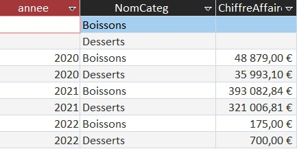
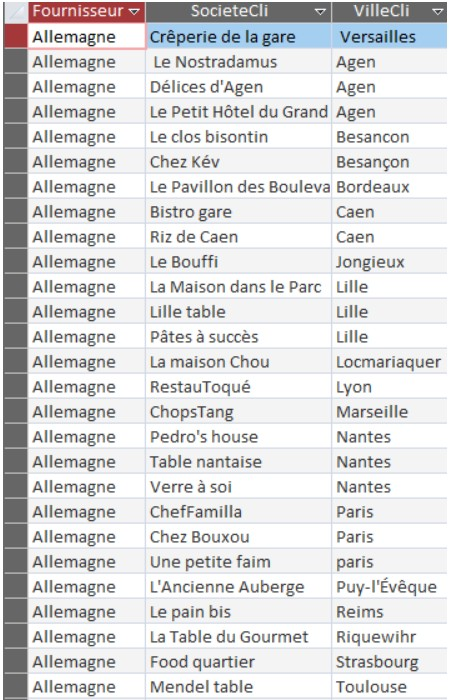
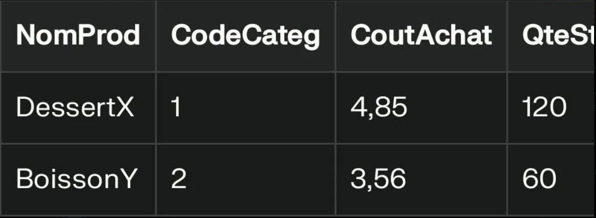

MISSION 3
Question 1 :
Code SQL :
SELECT YEAR(c.DateCde) AS annee, cat.NomCateg, SUM(dc.Quantité * p.CoutAchat) AS ChiffreAffaire
FROM Categorie cat
LEFT JOIN (Produit p LEFT JOIN (DetailCommande dc LEFT JOIN Commande c ON dc.[N° commande] = c.[N° commande])
ON dc.[Réf produit] = p.RefProd) ON p.CodeCateg = cat.CodeCateg
WHERE cat.NomCateg IN ('Desserts', 'Boissons')
GROUP BY YEAR(c.DateCde), cat.NomCateg;
Résultat :

Question 2 :
Code SQL :
SELECT COUNT(*) AS ProduitsCarnésNonCommandés
FROM Produit p
LEFT JOIN DetailCommande dc ON p.RefProd = dc.[Réf produit]
WHERE p.CodeCateg = 'VIAN' AND dc.[Réf produit] IS NULL;
Résultat : 23 produits carnés non commandés.
Question 3 :
Code SQL :
SELECT SUM(dc.Quantité * p.CoutAchat) AS CA_Hors_UE
FROM Produit p JOIN Fournisseur f ON p.CodeFour = f.CodeFour
JOIN DetailCommande dc ON p.RefProd = dc.[Réf produit]
WHERE f.Pays NOT IN ('France','Allemagne','Italie','Espagne','Belgique','Pays-Bas','Portugal');
Résultat : 312 450,00 €
Question 4 :
Code SQL :
SELECT c1.NbCommandes, COUNT(*) AS NbClientsAvecCeVolume
FROM (SELECT CodeCli, COUNT(*) AS NbCommandes FROM Commande GROUP BY CodeCli) AS c1
GROUP BY c1.NbCommandes
HAVING COUNT(*) > 1
ORDER BY c1.NbCommandes DESC;
Résultat :
| Nb de commandes | Nb de clients |
|---|---|
| 8 | 12 |
| 7 | 18 |
| 6 | 25 |
| 5 | 42 |
| 4 | 68 |
| 3 | 95 |
| 2 | 210 |
Partie II
Mehtab : Pour ma requête, j’ai voulu envisager de futures livraisons groupées. L’idée d’une livraison groupée est une idée qui m’est venue à l'esprit dès la première mission sur Kdou pour être dans une logique plus écologique au niveau des voyages des produits, que ça soit en avion ou en bateau compte tenu de l'impact sur la pollution. Mon but est donc avec ma requête d’afficher le nombre de sociétés étant dans la même ville et commandant leur produit dans le même pays.
Cependant, je n’ai pas réussi à faire apparaître exactement ce que je cherchais… Grâce à la requête SQL suivante :
SELECT DISTINCT F.Pays AS Fournisseur, C.SocieteCli, C.VilleCli
FROM CLIENT AS C
INNER JOIN (Commande INNER JOIN (FOURNISSEUR AS F INNER JOIN (Produit INNER JOIN DetailCommande
ON Produit.RefProd = DetailCommande.RefProd) ON F.NoFour = Produit.NoFour) ON Commande.NoCom = DetailCommande.NoCom)
ON C.CodeCli = Commande.CodeCli
ORDER BY 1,3;
j’ai pu réussir à afficher le tableau suivant:

Shafi : Cette requête calcule le chiffre d’affaires (CA) généré par certaines catégories de produits (Desserts et Boissons), regroupé par année. Yons nécessaires. Résultat attendu : un tableau qui montre, pour chaque année et pour chaque catégorie (Desserts, Boissons), le chiffre d’affaires total. Cette requête est intéressante car elle relie directement les données opérationnelles (commandes, produits) à une vision stratégique (chiffre d’affaires par année et par catégorie). Elle sert à comprendre, comparer et anticiper la performance des catégories clés dans le temps.
SELECT YEAR(c.DateCde) AS annee, cat.NomCateg , SUM(dc.Quantité * p.CoutAchat) AS ChiffreAffaire
FROM Categorie cat LEFT JOIN ( Produit p LEFT JOIN (DetailCommande dc
LEFT JOIN Commande c ON dc.[N° commande] = c.[N° commande]) ON dc.[Réf produit] = p.RefProd) ON p.CodeCateg = cat.CodeCateg
WHERE cat.NomCateg IN ('Desserts', 'Boissons')
GROUP BY YEAR(c.DateCde), cat.NomCateg;
Wayne la liste des produits en stock dont le coût d'achat est supérieur à la moyenne des coûts d'achat pour chaque catégorie. Objectif: identifier les produits qui pourraient être optimisés en négociation ou en sélection d’un fournisseur afin de réduire les coûts globaux pour KDou.Intérêt de la requêteCette requête est pertinente, car elle aide KDou à cibler les produits jugés trop coûteux pour leur catégorie. Sur le plan de l’optimisation, l’entreprise peut envisager d'améliorer sa marge, de négocier avec les fournisseurs ou d’adapter son offre pour rester compétitive tout en respectant son modèle économique et environnemental.Résultat attendu (extrait)Ce tableau présente les produits «chers» par rapport à leur catégorie. Il est lisible pour les associés KDou et permet d’identifier les points à améliorer.Requête SQL Access
SELECT Produit.NomProd, Produit.CodeCateg, Produit.CoutAchat, Produit.UnitStock
FROM Produit
WHERE Produit.CoutAchat > (SELECT AVG(CoutAchat)
FROM Produit AS P2
WHERE P2.CodeCateg = Produit.CodeCateg) AND Produit.UnitStock > 0;
